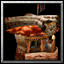
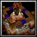
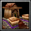

Kobold Camp
385
185
Primary structure, used to train Kobold Engineers and
receive gathered resources. Can be upgraded to Stronghold
and then Fortress to enable the production of additional
types of structures and units.
Kobold Camp
Kobold Housing
80
20
Provides an additional source of gold income.
Limited to 4.
Kobold Housing

Cavern
160
40
Provides food, which increases the maximum number of
units that can be trained.
Barracks
180
50
Primary troop production building. Trains Kobold Warrior,
Kobold Tunnelers.
Also contains the Candles, and Burrow upgrades.
Barracks
Forge
205
Serves as a drop-off point for harvested lumber.
Also contains upgrades for improved armor, melee weapons,
and ranged weapons.
Forge
Watch Tower
110
80
Defensive structure.
Attacks land and air units.
Watch Tower
Advanced Watch Tower
170
100
Defensive structure.
Attacks land and air units.
Advanced Watch Tower
Kobold Shipyard
160
60
Boat construction facility. Produces Orc Transport
Ships, Orc Frigates, and Orc Battleships.
Kobold Shipyard
Tier 2
Advanced Kobold Camp
700
375
Upgrade to Advanced Kobold Campto enable the production
of additional types of structures and units.
Advanced Kobold Camp

Arcane Academy
150
135
Spellcaster production building. Trains Kobold Geomancers
and Kobold Mushroom Casters.
Also contains spell upgrades for Kobold Geomancers
and Kobold Mushroom Casters.
Arcane Academy
Kobold Tunnel
75
150
Invisible building which is connected to all other
Kobold Tunnel buildings to transport friendly ground
units.
Increases the hit points regeneration of all transported
units.
Kobold Tunnel
Beastiary
145
140
Trains Raiders, Kodo Beasts, Batriders, and Wind Riders.
Also contains the Ensnare, Envenomed Spears, Liquid
Fire and War Drums upgrades.
Beastiary
Tier 3
Fortified Kobold Camp
1025
565
Upgrade to Fortified Kobold Camp to enable the production
of additional types of structures and units.
Fortified Kobold Camp

Kobold Mines
1200
700
Has auras with effects depending on the number of units
lost to enemies.
Limited to 1.
Kobold Mines
Power Generator
2000
1500
A power generator that can protect buildings nearby
by increasing their defense and life generation. It
helps you to protect your main base from being completely
destroyed by an enemy army.
Can only be built once
and has to be built in an area without hostile buildings.
Power Generator
Portal
150
150
Opens a Portal which can have another allied Portal
as destination. This helps you to connect different
locations on the map with each other avoiding enemy
troops. When the Portal is destroyed all allied Portals
which have it as destination will be disabled automatically.
When the Portal's destination is destroyed, it will
be disabled automatically.
Be careful since Portals
can be used by enemy units, too!
Portal
Research Tent
150
50
A tent for important researches. Contains upgrades
Storm Protection, Temple of Demigod Blue Prints, Evolution,
and Cheap Evolution.
Research Tent
Event House
150
50
A house to control important events.
Limited to 1.
Event House
Trading Post
50
Allows trading all resources other than gold and lumber.
Trading Post
Alchemist Lab
3000
2000
Allows converting units into different races.
Limited to 1.
Alchemist Lab
Wall
80
20
A wall protects your town.
Wall
Antimagic Ward
1000
1000
Prevents enemy Reveals, Far Sight, Portal, Scroll of
Town Portal, Blink, Mass Teleportation and Staff of
Teleportation spells of enemy units in the nearby area
and adds a black mask for enemy players. Can cast Silence,
detects invisible units and is permanently invisible
itself.
Only works if built before enemy Antimagic Wards in
the area.
Antimagic Ward
Spell Book
200
100
Allows learning spells for reskillable heroes and Equipment
Bags. Contains all available spells for all 5 slots.
Use the Change Page abilities to change the listed
ones.
Spell Book
Marketplace
200
100
Sells items dropped from creeps.
Limited to 1.
Marketplace
Thieves Guild
200
100
Sells killed units from creeps and enemy players. Units
can only be purchased once and are removed from the
Thieves Guild after that. However, when they die again,
they will be readded.
Limited to 1. Does not
sell workers, citizens or summoned units.
Thieves Guild
Mounts Cage
200
100
Allows buying mounts for your heroes. Mounts are available
at hero level 20. Use the Change Page abilities to
change the listed ones. Construct a Witch Hut to modify
the abilities of your mount.
Mounts Cage
Dragon Roost
15000
15000
Allows to train all Dragons.
Limited to 1.
Dragon Roost
Armory
1000
500
Allows equipping units and heroes.
Limited to 1.
Armory
Banner Shop
100
50
Sells banners.
Banner Shop
Tier 4
Temple of Light
3000
500
The Eternal Guardian´s seat of power. Has different
defensive capabilities. Can learn the Magic Sentry
ability.
Attacks land and air units.
Temple of Light
Temple of Darkness
3000
500
The Destroyer´s seat of power. Has different offensive
capabilities. Can learn the Magic Sentry ability.